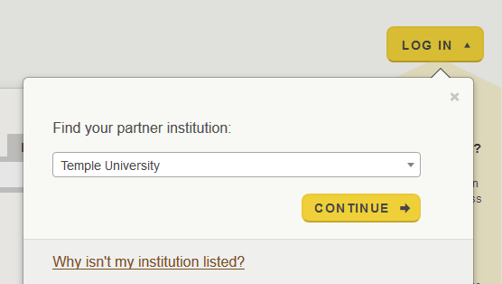
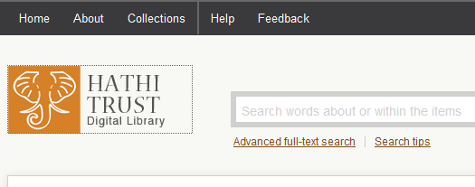
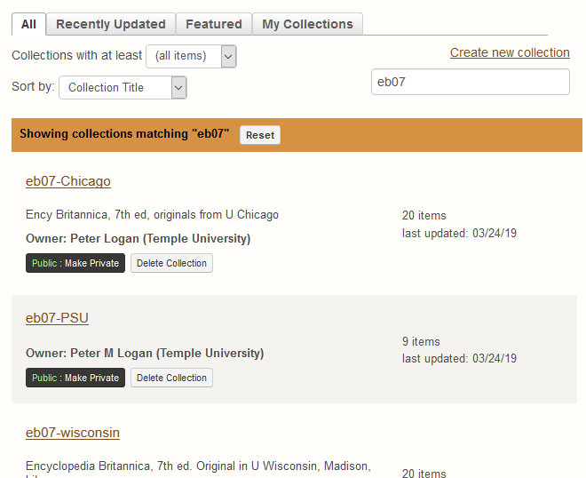
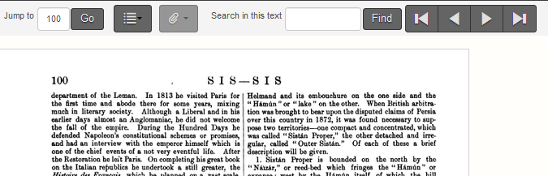

Check the Entry Terms List
Compare our list of recognized entry terms with the print pages.
- Open HathiTrust in a browser and Log In ▾.
-
Under Find your partner institution, select
Temple University.

- Put in your TU username and password and select Login.
-
On the black menu bar across the top, select
Collections.

-
Switch to the All tab and type the edition name, i.e.
eb07. Select one of the collections that appears in
the results.
The different versions of each edition are unique scans from different libraries.
-
Scroll through the list of volumes and open the one your need in
Full View.
The volume number is the included in the filename of all entry files; it follows the edition number. See digital-editions Folder
-
You can go directly to the page you need by typing the page number in the
Jump To dialogue. Zoom In/Out
buttons appear to the right of the window.

- Open the entry inventory file.
- Compare the list of entry terms with the print edition. If a page has many short entries on it, check that all have an entry file. For entries spanning many pages, make sure there are no hidden entries within.
- Add notes for missing entries in the comments column. When you finish a section, add the date to the entry-chk column.